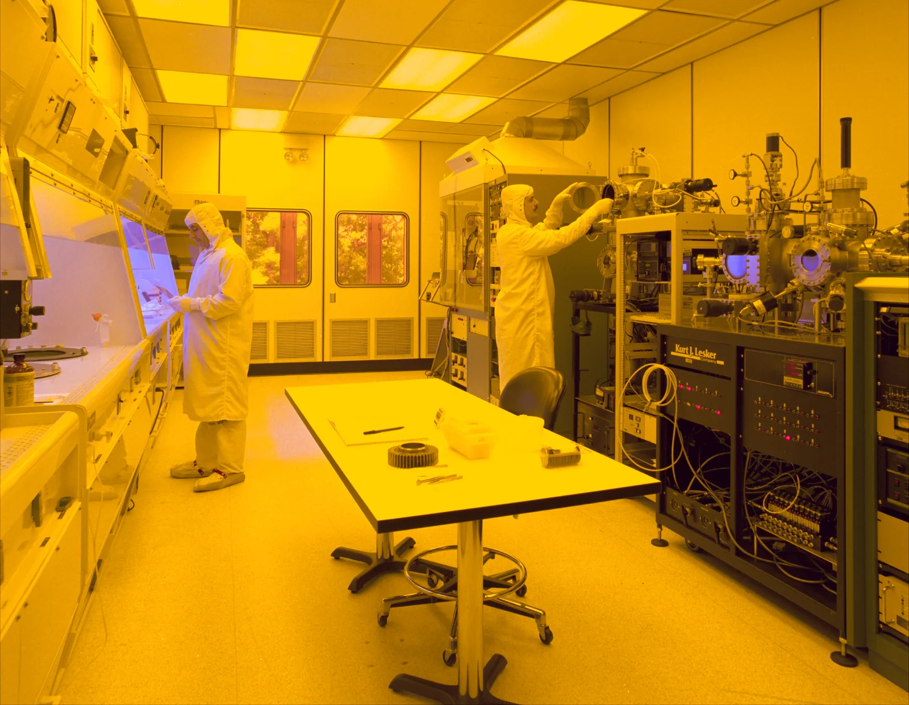

Learning Targets
- Identify major safety expectations for the engineering classroom and FabLab.
- Explain PPE and safe behavior expectations around tools and materials.
- Understand the signed acknowledgment requirement before tool use.
Focus Question: How do safe habits make engineering work possible?
Connect safe behavior to engineering quality, shared responsibility, and permission to use equipment.
You can recognize an unsafe condition, stop, and explain the correct next action.
Safety begins with awareness, preparation, and behavior—not only with emergency response.
Quick class share: Identify one unsafe condition that could affect a person, a tool, a material, or the quality of a project.
Safety is an engineering requirement.
Unsafe behavior can injure people, damage equipment, waste materials, and make test results unreliable.
Technical spaces use controlled procedures because quality and safety are connected.

These expectations apply before activity-specific tool rules are introduced.
Vote before opening the answer.
A student notices that a cutting tool has a loose handle, but the class is already behind schedule.
Stop, prevent use, and report the condition. Schedule pressure never overrides safety.
Do not continue with unsafe equipment.
Keep others away from the hazard.
Tell the teacher immediately.
Orientation does not replace individual equipment certifications.
Student and parent/guardian review classroom and FabLab expectations.
Submit the signed paper acknowledgment as a graded completion item.
Complete separate tool certifications before operating specific equipment.
Complete the safety-readiness requirement before future fabrication work.
Engineering Design Process
Open Lesson 0.4Use only the files and references that support today’s work.
Google Slides-friendly 16:9 lesson deck with question slides followed by separate answer-reveal slides.
A short visual reinforcement of PPE and safe behavior in technical workspaces.
Return to the IED course hub for units, resources, certifications, and current course information.